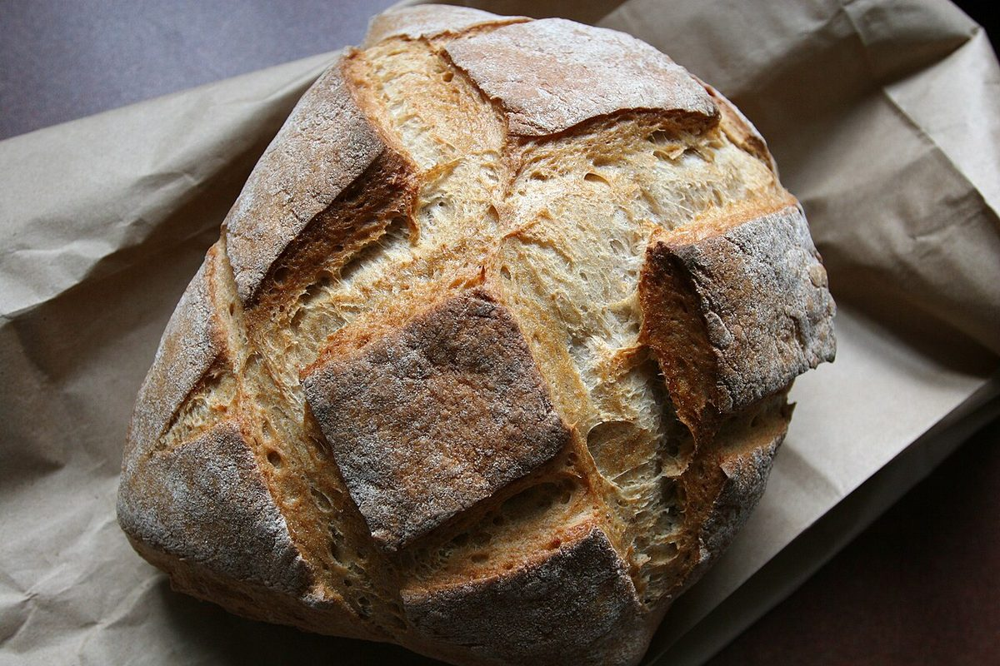

bakehouse KOTI(ベイクハウス コチ)は、2021年7月に鳥取市田島でオープンした小さなパン屋です。木を生かした明るい店内には朝から焼きたてのパンが並び、奥の製造スペースではパンづくりの様子を見ることができるそうです。
- 開店2021年7月27日
- 素材天美卵(大江ノ郷自然牧場)・岸田牧場の牛乳を使用と紹介されています
- 得意ハード系のパン、とくにカンパーニュ。湯種製法の食パン
- 駐車場店舗前に2台
店名の由来や店主の想いは、公開されている情報では確認できていません。ここでは断定せず、確認できた事実のみを記載しています。
